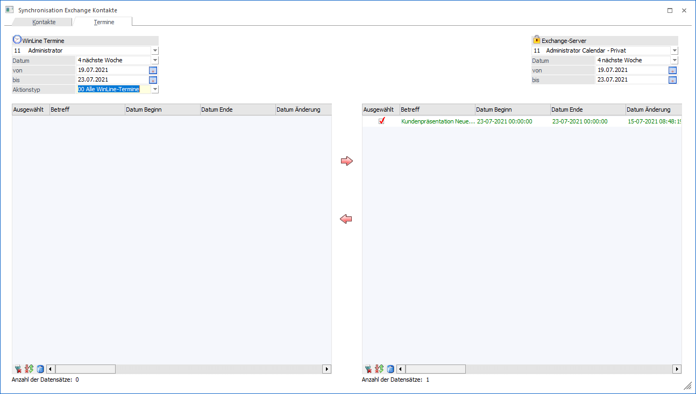
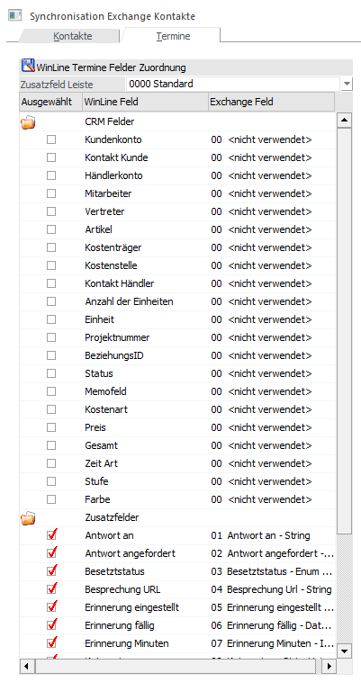
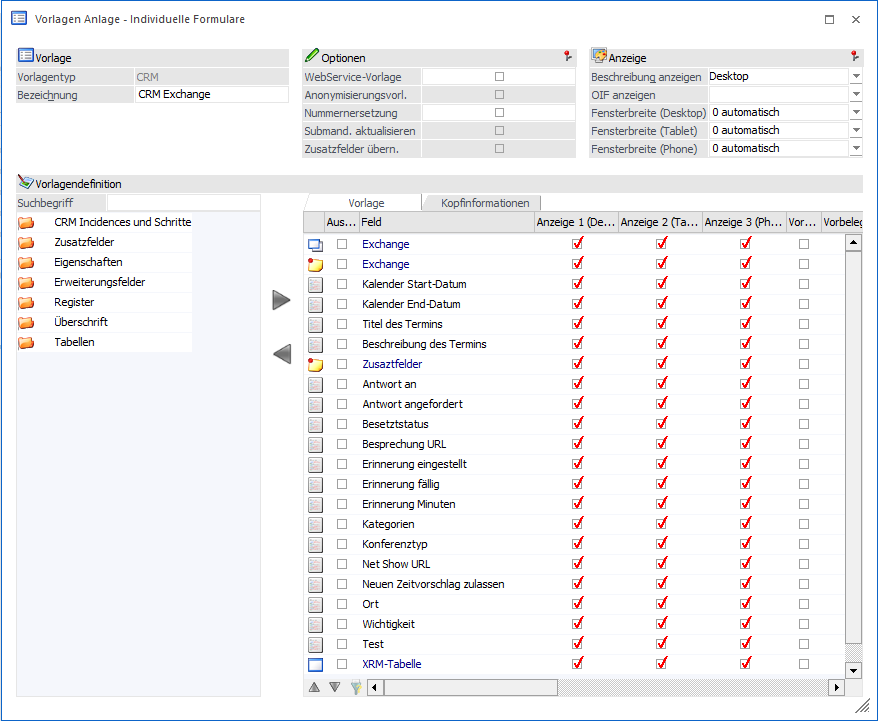
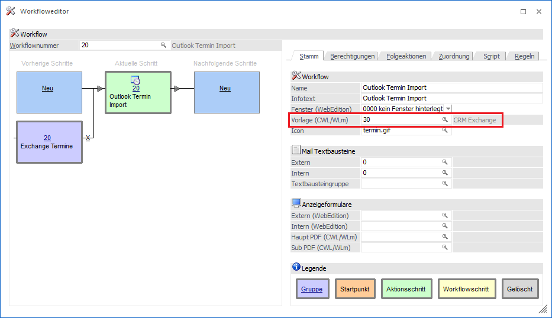
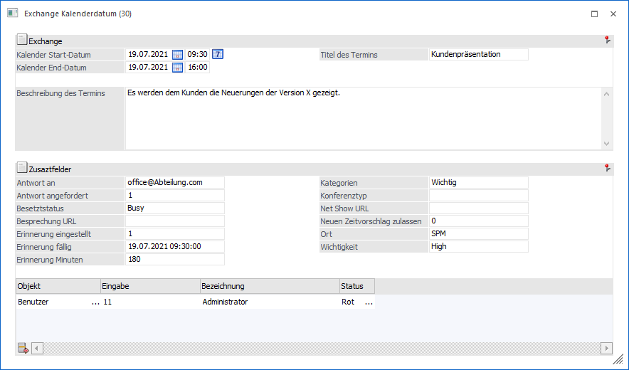
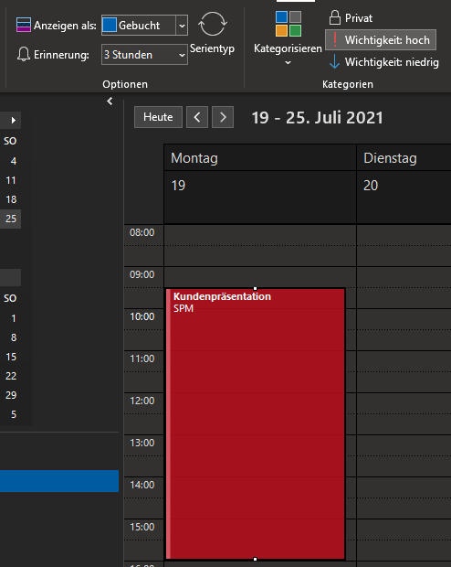
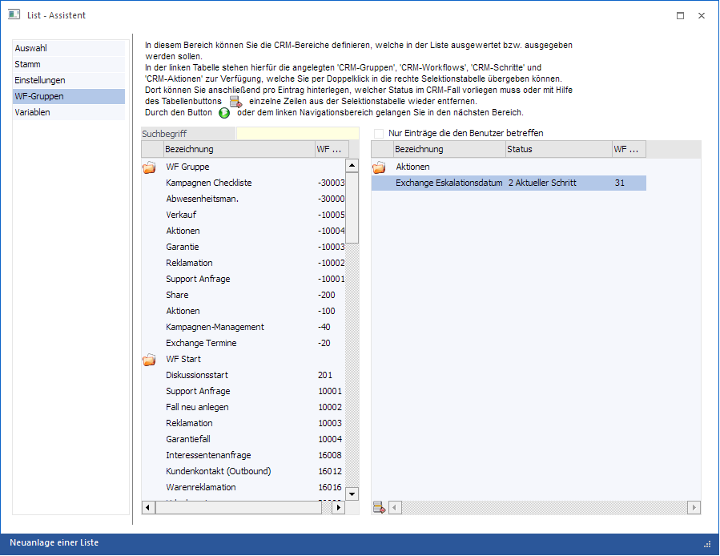
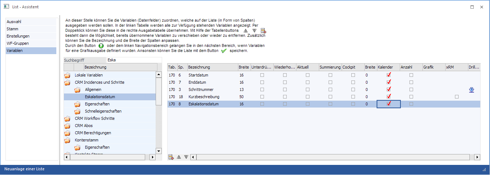
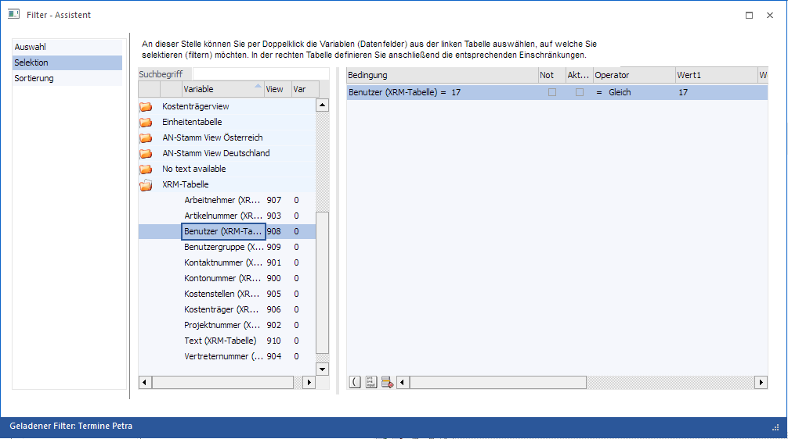

Wenn in den Parametern/Einstellungen eine Exchange Verbindung hinterlegt ist, kann im WinLine Start unter
1 Optionen
1 Synchronisation
ein Abgleich der WinLine Termine mit dem Exchange Server durchgeführt werden. Hier kann beim Import von Exchange-Terminen bestimmt werden, ob diese dem jeweiligen Benutzer zugeordnet werden. In diesem Fall wird der ausgewählte Benutzer als ein Eintrag in die XRM-Tabelle gesetzt.
Hinweis
Es muss mindestens ein Exchange 2010 im Einsatz sein.

Rechts oben kann der jeweilige Exchange Server ausgewählt werden, welcher in den Einstellungen angelegt wurde. Links stehen folgende Optionen zur Verfügung:
ü Benutzer
Der Benutzer, welcher
der Exchange-Verbindung in den Exchange-Einstellungen zugeteilt ist wird hier
standardmäßig angezeigt. Damit wird der Benutzer in die XRM-Tabelle geschrieben,
woraufhin eine Auswertung benutzerspezifisch möglich ist.
ü Admin-Benutzer
Sofern der
Abgleich als Admin-Benutzer durchgeführt wird (dh. Dieser ist gerade in der
WinLine angemeldet und führt den Abgleich durch) steht dieser in der linken
Auswahllistbox ebenfalls zur Verfügung.
ü Auswahl ohne XRM-Tabelle
Soll
der Abgleich wie bisher - dh. ohne XRM-Zuweisung - erfolgen so kann diese Option
ausgewählt werden.
Anschließend kann mit auf "Exchange Kontakte anzeigen" oder "WinLine Kontakte anzeigen" die jeweilige darunter liegende Tabelle mit den Datensätzen befüllt werden. Bei den WinLine Kontakten gibt es die Möglichkeit die Anzeige mit einem Filter, einem bestimmten Kontakt und/oder den inaktiven Kontakten einzuschränken. So werden alle gewünschten Kontaktdaten aus dem WinLine Kontaktestamm und aus dem Exchange Kontaktestamm angezeigt.
Mit "Vorschläge anzeigen" werden alle Termine angezeigt und jene mit einem Häkchen hinterlegt, die synchronisiert werden können, weil sie entweder neu sind oder eine Änderung beinhalten.
Soll laut der hinterlegten Logik (unter WinLine START/Parameter/Einstellungen/Exchange) eine Änderung bei einem Termin vorgenommen werden, so wird der betroffene Termin rot angezeigt.
Wird ein Termin als neu erkannt wird dieser grün angezeigt:

WinLine SYNC
Damit zusätzliche Exchange Felder definiert werden können, muss der Button "Termin-Felder zuweisen" angewählt werden.

In diesem Bereich kann definiert werden, welcher Inhalt welches CRM-Felds an ein zusätzliches Exchange Feld übergeben werden soll. Es werden alle Felder der T170 (CRM-Tabelle) und die angelegten CRM-Zusatzfelder angezeigt. Mittels Auswahlbox in der Spalte "Exchange Feld" kann das gewünschte Exchange Feld in welches übergeben werden soll, ausgewählt werden. Hier stehen folgende Auswahlmöglichkeiten zur Verfügung:
ü 01 Antwort an - String
Wenn
hier eine gültige Mailadresse übergeben wird, werden die
Terminzusagen/Terminabsagen an diese Mailadresse versendet.
ü 02 Antwort angefordert - Boolean
(0,1)
Wenn dieser Wert mit 1 übergeben wird, dann wird beim Exchange-Termin
mit dem Text "Bitte um Antwort" erstellt.
ü 03 Besetztstatus - Enum (Busy,
Free, NoData, OOF, Tentative, WorkingElsewhere)
Je nachdem welcher von den
vorbestimmten Werten übergeben wird, wird dies im Exchange-Termin angezeigt.
ü 04 Besprechung URL -
String
Dieses Feld kann mit einem Wert befüllt werden, welcher anschließend
mit einem Microsoft Teams-Besprechungs-Add-In abgeholt werden könnte.
ü 05 Erinnerung eingestellt -
Boolean (0,1)
Falls der Wert 1 übergeben wird, ist eine Erinnerung
aktiviert.
ü 06 Erinnerung fällig - DateTime
(dd.MM.yyyy HH:mm:ss
Hier kann mittels DateTime (z.B. 19.07.2021 19:30:00)
ein Zeitpunkt für die Termin-Fälligkeit übergeben werden.
ü 07 Erinnerung Minuten -
Integer
Wieviele Minuten zuvor soll eine Erinnerung angezeigt werden. (nur
ganze Zahlen)
ü 08 Kategorien - StringList
(getrennt durch ,)
In diesem Feld können die Kategorien getrennt durch einen
Beistrich an den Exchange-Termin übergeben werden. Wenn z.B. die Kategorien in
Ihrem Exchange "Wichtig" und "Abrechnung" benannt sind, dann müsste hier der
Wert "Wichtig,Abrechnung" übergeben werden, damit dem Termin beide Kategorien
zugewiesen sind.
ü 09 Konferenztyp - Integer
Hier
kann ein Zahlwert übergebn werden, welcher mit anderen Programmen/Addins
abgefragt werden kann. (z.B. 1 = Online Meeting)
ü 10 Net Show Url - String
In
diesem Feld kann ein weiterer Link übergeben werden, welcher mit anderen
Programmen/Addins abgefragt werden kann.
ü 11 Neuen Zeitvorschlag zulassen -
Boolean (0,1)
Wenn hier der Wert 1 übergeben wird, ist beim Exchange-Termin
die Option "Änderungsvorschlag zulassen" aktiviert.
ü 12 Ort - String
In diesem Feld
kann ein beliebiger Text an den Exchange-Termin übergeben werden, welcher dann
im Feld "Ort" zu sehen ist.
ü 13 Wichtigkeit - Enum (Low,
Normal, High)
Je nachdem welcher von den vordefinierten Werten übergeben
wird, wird der Termin mit der "Wichtigkeit: hoch", "Wichtigkeit: niedrig" oder
"normal, also keine Wichtigkeit" gekennzeichnet.
Hinweis
Damit alle Felder verwendet werden können ist mindestens ein Exchange 2013 notwendig.
Nachdem die gewünschten Exchange-Felder Ihren CRM-Feldern zugewiesen wurden, müssen diese Felder noch in einer indiv. CRM-Vorlage hinterlegt werden, damti diese auch befüllt werden können. Bitte auf die Übergabe der richtigen Werte der Felderbeschreibung achten. (String, Boolean, DateTime, etc…)

Anschließend muss die zuvor erstellte CRM-Vorlage mit den zugewiesenen CRM-Feldern beim Workflow "20 Outlook Import" hinterlegt werden, damit das mesonic Office-Addin auch diese Vorlage bei der Übergabe eines Exchange-Termins an die WinLine heranzieht. Im Outlook ist es der Button "WinLine Termin-Import" im Bereich "WINLINE", welcher ebenfalls die neuen Exchange-Felder an die WinLine und die dort hinterlegte CRM-Vorlage übergibt. Über das Office-Addin können beim Exchange-Termin angepasst Werte an die WinLine übergeben und somit aktualisiert werden. (im vorhandenen CRM-Fall)

Hinweis
Die mesonic Office-Addins müssen zuvor installiert werden und sind im WinLine Verzeichnis zu finden. (OfficeAddin.exe)
Die zusätzlich definierten Exchange Felder werden auch beim Schreiben eines CRM-Workflows, welcher einer "Exchange"-Folgeaktion hinterlegt hat, an den Exchange Termin übergeben. Auch hier muss eine CRM-Vorlage beim Workflow hinterlegt werden, welche die zugewiesenen CRM-Felder beinhaltet, wenn diese verwendet/übergeben werden sollen. (z.B. "32 Exchange Kalenderdatum")
So könnte die Erfassung eines Workflows mit den zusätzlichen Exchange Felder aussehen:

Das Ergebnis im Outlook:

WinLine Kalender anlegen
Um die synchronisierten Termine auch im WinLine Kalender zu sehen, muss vorher eine CRM Aktion im List-Assistenten angelegt werden.
In der WinLine INFO unter
1 CRM
1 List-Assistent
haben Sie die Möglichkeit den WinLine Kalender anzulegen.

Sie haben die Möglichkeit die Kalenderausgabe auf einen bestimmten Workflow-Schritt einzuschränken oder alle drei verfügbaren Exchange Workflow-Schritte einzubeziehen.

Im dritten und letzten Schritt wird nun definiert, welche Werte (Variablen) auf der Liste gedruckt werden sollen. Um die Werte im Kalender anzuzeigen, muss die Checkbox für Kalender aktiviert werden.
Es kann mittels Filterfunktion nach den Einträgen in der XRM-Tabelle gefiltert werden.

Die Filterung wurde um die Einträge in der XRM-Tabelle erweitert:
ü Arbeitnehmer
ü Artikelnummer
ü Benutzer
ü Benutzergruppe
ü Kontaktnummer
ü Kontonummer
ü Kostenstellen
ü Kostenträger
ü Projektnummer
ü Text
ü Vertreternummer